01
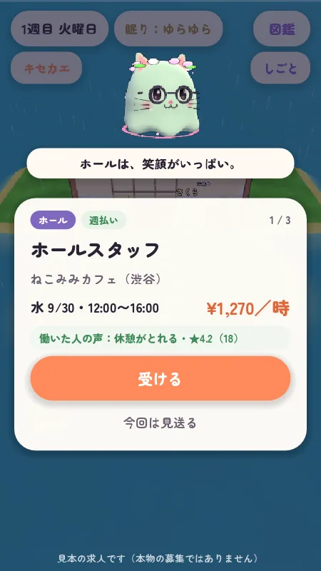
次の仕事を見つける。
条件に合った求人の見本を、おばネコがいくつか紹介。時給や働いた人の感想を見て、受けるか見送るかを選べます。
短期・スキマバイトで働く人のゲーム
次のシフトを見つけて、おばネコと一緒に働く。帰る先には、少しずつ育つ自分だけの島。
無料の試作版です。求人は見本です。ゲームの初回読み込みには数十秒かかることがあります。
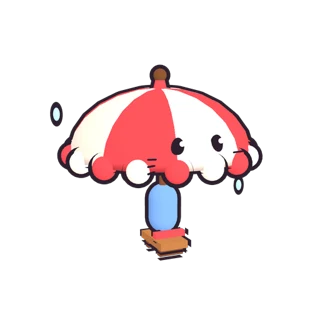

あなたの毎日に、小さな世界を。
知らない職場にも、いつもの相棒。
火曜日はカフェ、金曜日は別のお店。Paw Timeは、働く場所も同僚も変わる人のためのゲームです。変化の多い一週間に、おばネコと自分の島が、いつもの居場所をつくります。

いつもの一日に、小さな楽しみを
おばネコと過ごす一日が、働くことと自分の世界をつなぎます。

条件に合った求人の見本を、おばネコがいくつか紹介。時給や働いた人の感想を見て、受けるか見送るかを選べます。

シフト中、おばネコも小さなお店で働きます。だんだん疲れた姿になり、ゲーム内のコインも一定時間で増えなくなります。

光る玉をすくって、仲間と出会い、島を育てる。仕事のない日にも、遊べることがあります。
画面は試作版です。掲載している求人は見本で、実際の募集ではありません。
実際に動くゲームを、そのまま
おばネコとの出会いから、翌朝の孵化まで。44秒の映像で一日の流れを見たら、ブラウザで遊んでみてください。
案内付きで遊ぶなら、ゲームのタイトル画面で「3分デモ」を選んでください。言語もそこで切り替えられます。保存済みの島がある場合、デモ開始前に置き換えの確認が表示されます。
実際のゲーム映像。日本語の画面で紹介します。
働く時間と、その先の暮らしに
働く一日を、少し自分らしいものに。ゲームの報酬には上限があり、実際の賃金とはつながりません。
シフトを終えたときの網は、そのシフトの長さでは増えません。
ゲーム内コインには一日の上限があり、働いた時間の合計が7.5時間になると増えなくなります。現金とは交換できません。
集める、飾る、着替える。次のシフトがなくても遊べます。休息も、自分の世界を育てる一日の流れに入っています。
審査員の方へ
動くゲーム、検討中の事業、これから確かめる仮説。それぞれの段階を分けて紹介します。
| ゲーム 動く試作版 | おばネコ診断、求人の見本、一緒に働く体験、玉すくい、着せ替え、島づくり。 映像で画面を確認でき、ブラウザ版で体験できます。 |
|---|---|
| 求人 見本データ | 求人とデモのシフトは見本で、実際の募集ではありません。 実際の採用成果は、まだ示していません。 |
| 事業 検討中のモデル | 基本のゲームは無料。求人掲載やシフトのマッチングで、企業が費用を負担する案です。 見た目のアイテムの買い切りも計画しています。決済の仕組みと、企業がお金を払う理由はこれから検証します。 |
| 効果 これから検証 | 仕事のない日にも使いたくなるか。相棒は、支えになる存在と感じてもらえるか。 次は、働く人に使ってもらって確かめます。睡眠、過剰労働、採用への効果は未検証です。 |
Godot 4による3Dキャラクターと、ブラウザ向けの書き出し。
TypeScriptのAPIと、企業向けWebアプリをモノレポで管理。
端末上のゲーム進捗と、別経路の利用状況分析。扱う範囲はデータの説明に記載しています。
こんな仲間が待っています
眠たがりも、雨好きも、ちょっと不思議な子も。30体のレアな仲間が、島での時間を彩ります。

のんびりするのが得意な子。
雨の日に会いたくなる相棒。
どこにいても、春の気配。
テーマごとに仲間を紹介します。達成すべき条件の一覧ではありません。
30体を表示
睡眠

睡眠

睡眠

睡眠
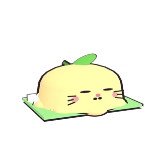
睡眠

睡眠
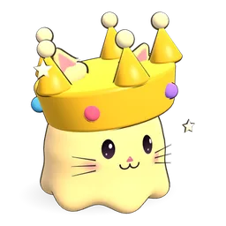
はじめて

はじめて
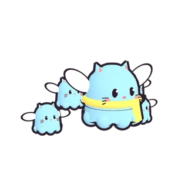
はじめて
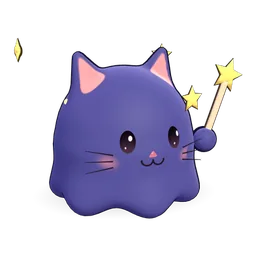
はじめて

はじめて

時間帯

時間帯

時間帯
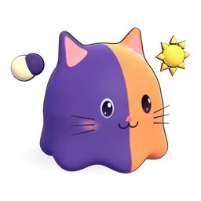
時間帯
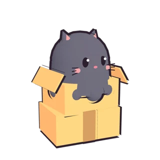
時間帯
天気
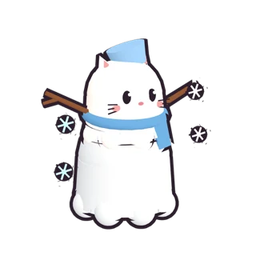
天気
天気
天気
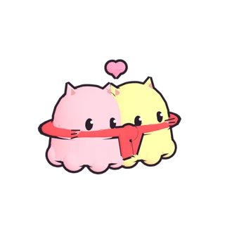
仲間

仲間
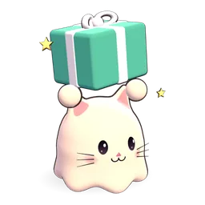
仲間

仲間
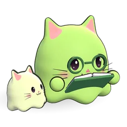
仲間

リズム

リズム

リズム
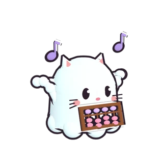
リズム
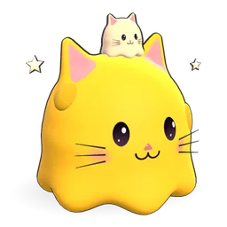
リズム
おばネコに会って、自分の島を育てよう。